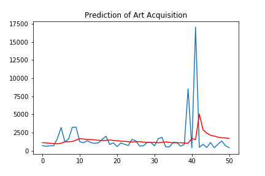

ARIMA Time Series Model
The ARIMA was used to fit and predict the number of Metropolitan Museum of Art acquisitions. ARIMA models rely on parameters p (lag observations), d (differencing), and q (moving average window) to fit and predict. Statistical calculations and trial-and-error produced a (p, d, q) parameter of (0, 1, 1) meaning that the model was to ignore lags, difference the data one time, and utilize a window of one for the moving average. The images below illustrate the model fit and prediction results. There is some degree of error between the actual acquisitions (blue line) and the predictions (red line) because of the years with significantly more additions to the museum collection.A timeline below shows the possible correlation between increased acquisitions and significant global events. These spikes made fitting the model difficult, and could likely mean an inaccurate prediction. The ARIMA model cannot predict these major global events, limiting its accuracy.
